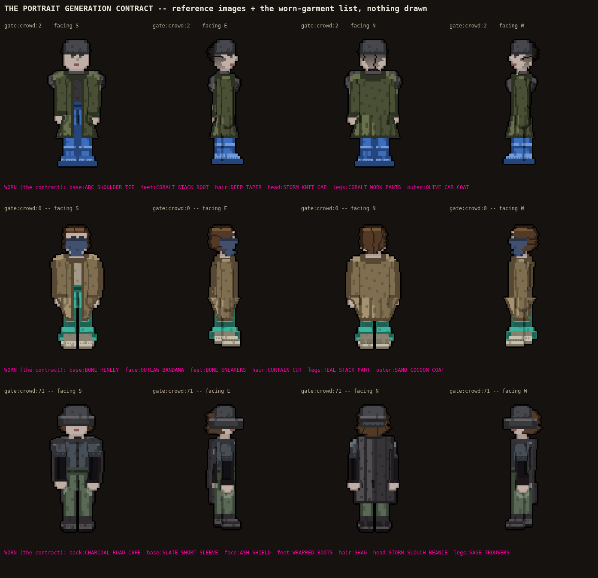

Rule 108a, landed this round: a generated portrait is referenced against the real worn garments, never hand-drawn in code. Last round's candidate (portrait-the-real-clothes-reach-the-portrait-10-10) proved the bug (headwear agreed with the body only 59% of the time, eyewear 68%, top clothing never read at all) but its FIX METHOD -- hand-coded overlay polygons in a cook tool -- is now retired by this same rule. This page is not a fix. It is the input sheet COOK's own [generate against the pack] row will need the day it reaches portraits: for each citizen, four real facings (zero new pixels, the real drawChar()) plus the exact GARMENTS piece worn in every slot that should steer the call.

| citizen | the contract |
| gate:crowd:2 | hat: STORM KNIT CAP face accessory: none top: OLIVE CAR COAT (outer, covers ARC SHOULDER TEE) hair: DEEP TAPER |
| gate:crowd:0 | hat: none face accessory: OUTLAW BANDANA top: SAND COCOON COAT (outer, covers BONE HENLEY) hair: CURTAIN CUT |
| gate:crowd:71 | hat: STORM SLOUCH BEANIE face accessory: ASH SHIELD top: SLATE SHORT-SLEEVE hair: SHAG |
Not a candidate face, not in VOTE for a thumb on a look -- a reference sheet for a call this lane does not own. Nothing here touches slices/, engine/ or the demo.